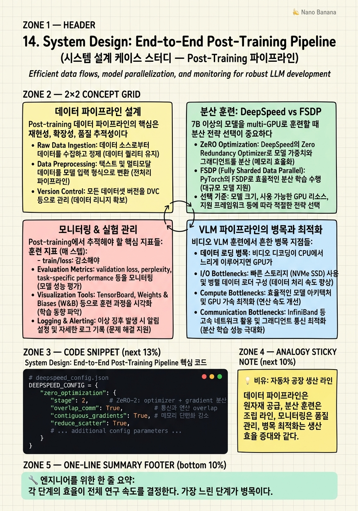

System Design: End-to-End Post-Training Pipeline

🎯 학습 목표
- LLM/VLM post-training을 위한 end-to-end 파이프라인의 각 구성 요소를 설계할 수 있다
- DeepSpeed ZeRO-2/3의 동작 원리와 언제 사용하는지 설명할 수 있다
- FSDP vs DeepSpeed의 선택 기준을 제시할 수 있다
- 훈련 중 GPU utilization, throughput, 모델 품질 지표를 동시에 모니터링하는 방법을 설명할 수 있다
- 비디오 temporal grounding 파이프라인에서 bottleneck 위치와 최적화 방법을 설명할 수 있다
Post-training 파이프라인은 단순히 훈련 코드를 실행하는 것이 아니라, 데이터 수집과 큐레이션, 훈련 인프라 설정, 실험 추적, 평가, 그리고 이터레이션을 포괄하는 복합 시스템이다. 이 전체 루프의 효율이 연구 속도와 최종 모델 품질을 결정한다.
해외 빅테크에서 post-training 시스템 설계 면접은 지원자가 단순히 개별 기술을 아는 것을 넘어, 전체 시스템을 트레이드오프를 고려하여 설계할 수 있는지를 평가한다. 특히 '주어진 리소스에서 가장 효율적으로 목표를 달성하는 방법'을 체계적으로 제시하는 능력이 중요하다.
이 챕터에서는 VLM temporal grounding 파이프라인을 예시로, 실제 프로덕션 수준의 시스템을 설계하는 과정을 단계별로 다룬다.
핵심 내용
데이터 파이프라인 설계
Post-training 데이터 파이프라인의 핵심은 재현성, 확장성, 품질 추적성이다.
컴포넌트:
*원본 데이터 수집*: 저작권 확인된 비디오 소스, 기존 annotation 데이터셋, 자동 annotation 생성.
*전처리 파이프라인* (Apache Beam 또는 Spark):
`python
# 단계별 처리 (각 단계 독립적으로 재실행 가능)
# 1. 비디오 분할 (scene detection)
# 2. 프레임 추출 (uniform/adaptive)
# 3. 품질 필터 (해상도, blur, 밝기)
# 4. 텍스트 편향 필터
# 5. 중복 제거 (MinHash)
# 6. 파티셔닝 (train/val/test)
`
*메타데이터 추적*: 각 샘플의 원본 소스, 전처리 버전, 품질 점수를 메타데이터로 저장. 특정 버전의 데이터로 재현 가능해야 한다.
*저장 포맷*: WebDataset(tar.gz 기반)이 분산 훈련에서 효율적. S3/GCS에 저장 후 streaming으로 로드.
분산 훈련: DeepSpeed vs FSDP
7B 이상의 모델을 multi-GPU로 훈련할 때 분산 전략 선택이 중요하다.
DeepSpeed ZeRO:
- ZeRO-1: Optimizer state 분산 (메모리 ~4× 절감) - ZeRO-2: + Gradient 분산 (~8× 절감) - ZeRO-3: + Parameter 분산 (~64× 절감)
7B 모델 훈련 시 ZeRO-2가 일반적 선택. ZeRO-3는 메모리 절감이 크지만 통신 overhead가 증가한다.
PyTorch FSDP (Fully Sharded Data Parallel):
- ZeRO-3에 해당하는 전략 - PyTorch native → 통합 용이 - HuggingFace Accelerate와 잘 통합됨
선택 기준:
- TRL/HuggingFace 생태계 → Accelerate + FSDP - veRL/OpenRLHF (RLHF 전용) → DeepSpeed + custom - 최대 메모리 효율 필요 → ZeRO-3 또는 FSDP - 시작하기 쉬운 것 → ZeRO-2
실전 계산: 7B bf16 모델 = 14GB. ZeRO-2로 8×A100(80GB)에서: - Model: 14GB × 1 (non-sharded) = 14GB - Optimizer(AdamW): 14GB × 2 (fp32) / 8 = 3.5GB per GPU - Gradient: 14GB / 8 = 1.75GB per GPU - 나머지 60GB: activation + batch
모니터링 & 실험 관리
Post-training에서 추적해야 할 핵심 지표들:
훈련 지표 (매 스텝):
- train/loss: 감소해야 함. Spike가 있으면 learning rate spike 또는 bad batch
- train/grad_norm: 폭발하면 gradient clipping 필요
- train/learning_rate: lr schedule 확인
모델 품질 지표 (매 N 스텝):
- eval/loss: 증가하면 overfitting
- eval/temporal_iou: task-specific 지표
- eval/r1_iou07: 엄격한 grounding 정확도
RLHF 전용 지표:
- rl/reward_mean: 증가해야 함
- rl/kl_divergence: 너무 높으면 reward hacking
- rl/entropy: 너무 낮으면 mode collapse
인프라 지표:
- gpu_utilization: 80% 이상 목표
- gpu_memory: OOM 방지를 위해 90% 이하 유지
- tokens_per_second: throughput 추적
Wandb 설정 권장 사항:
`python
import wandb
wandb.init(project="vlm-post-training",
config={"model": model_name, "data_version": "v2.1",
"lr": lr, "batch_size": bs})
# 자동 그룹화로 실험 비교 용이
wandb.define_metric("eval/r1_iou07", summary="max")
`
VLM 파이프라인의 병목과 최적화
비디오 VLM 훈련에서 흔한 병목 지점들:
데이터 로딩 병목: 비디오 디코딩이 CPU에서 느리게 이루어지면 GPU가 대기한다.
- 해결: dataloader_num_workers=8, prefetch_factor=2
- 미리 추출한 프레임 저장(pre-extracted frames)으로 런타임 디코딩 제거
- WebDataset streaming으로 I/O overhead 감소
메모리 병목: 비디오는 이미지보다 훨씬 많은 visual token을 생성한다.
- 해결: gradient_checkpointing=True (memory vs speed trade-off) - Flash Attention 2 필수 (O(n) memory vs O(n²) for standard) - Dynamic batch sizing: 짧은 시퀀스는 큰 batch, 긴 시퀀스는 작은 batch
훈련 불안정성: 멀티모달 훈련에서 loss spike가 자주 발생한다.
- 해결: gradient clipping (max_norm=1.0) - Warmup 스텝 증가 (처음 10% 스텝) - Bad batch 탐지: 특정 배치에서 loss가 sudden spike면 해당 배치 스킵
평가 병목: 평가를 훈련과 같은 GPU에서 실행하면 throughput 손실.
- 해결: dedicated evaluation node 또는 checkpoint 저장 후 별도 평가 실행
이터레이션 사이클 최적화
모델 개선의 속도는 실험 이터레이션 속도에 비례한다. 빠른 이터레이션을 위한 전략:
Scale-down 먼저: 7B 대신 1.5B 또는 3B로 먼저 실험하여 하이퍼파라미터를 탐색한다. 1.5B는 7B보다 학습이 5-10배 빠르다.
Sanity check 자동화: 훈련 시작 전 자동으로 확인하는 항목들:
`python
# 체크리스트 자동화
assert tokenizer.chat_template is not None, "Chat template 누락!"
assert (train_data.map(format_chat)[0]['text']
.count('<|im_start|>assistant') >= 1), "Response 마스킹 오류!"
assert model.training, "모델이 eval 모드!"
`
데이터 버전 관리: DVC(Data Version Control) 또는 S3 versioning으로 데이터 변경을 추적.
실험 템플릿: 표준 실험 설정을 YAML로 관리하고 변경점만 override:
`yaml
# base.yaml
base_model: Qwen/Qwen3-7B
lr: 2e-5
epochs: 2
# experiment_001.yaml (base.yaml 상속)
lr: 5e-5 # override만
data_filter: watch_before_you_answer # 새 필터 추가
`
💡 비유로 이해하기
Post-training 파이프라인은 자동차 공장의 생산 라인과 같다. 원자재(원본 데이터) 입고 → 품질 검사(데이터 필터링) → 가공(전처리) → 조립(훈련) → 최종 검사(평가) → 출하(배포)의 단계가 있다.
공장에서 특정 공정이 느리면 전체 생산 속도가 그 공정에 의해 결정된다(병목). VLM 파이프라인에서 비디오 디코딩이 병목이면, GPU 100개를 써도 I/O가 따라오지 못해 GPU가 idle 상태가 된다.
이터레이션 속도 최적화는 빠른 프로토타이핑 라인을 별도로 운영하는 것이다. 양산 라인(7B 모델 전체 훈련)을 돌리기 전에 테스트 라인(1.5B 모델 소수 스텝)에서 공정을 검증한다. 문제를 조기에 발견할수록 수정 비용이 낮다.
💻 코드 예시
DeepSpeed ZeRO-2로 VLM 분산 훈련을 설정하는 설정 파일과 Accelerate를 통한 통합 예시다. Wandb 모니터링도 포함한다.
# deepspeed_config.json
DEEPSPEED_CONFIG = {
"zero_optimization": {
"stage": 2, # ZeRO-2: optimizer + gradient 분산
"overlap_comm": True, # 통신과 연산 overlap
"contiguous_gradients": True, # 메모리 단편화 감소
"reduce_scatter": True,
"allgather_partitions": True,
},
"gradient_accumulation_steps": 8,
"gradient_clipping": 1.0,
"bf16": {"enabled": True},
"zero_allow_untested_optimizer": True,
"train_micro_batch_size_per_gpu": 1,
}
# Training script (train.py)
from accelerate import Accelerator
from accelerate.utils import DeepSpeedPlugin
import wandb
def train(config):
# DeepSpeed ZeRO-2 설정
ds_plugin = DeepSpeedPlugin(
zero_stage=2,
gradient_clipping=1.0,
offload_optimizer_device="none", # GPU offload 없음 (속도 우선)
)
accelerator = Accelerator(
deepspeed_plugin=ds_plugin,
mixed_precision="bf16",
gradient_accumulation_steps=config.gradient_accumulation_steps,
log_with="wandb",
)
accelerator.init_trackers(
project_name="vlm-post-training",
config={
"model": config.model_name,
"data_version": config.data_version,
"lr": config.lr,
},
)
model, optimizer, dataloader = setup(config)
model, optimizer, dataloader = accelerator.prepare(model, optimizer, dataloader)
for step, batch in enumerate(dataloader):
with accelerator.accumulate(model):
outputs = model(**batch)
loss = outputs.loss
accelerator.backward(loss)
optimizer.step()
optimizer.zero_grad()
# 핵심 지표 로깅
if step % 10 == 0:
metrics = {
"train/loss": loss.item(),
"train/lr": optimizer.param_groups[0]["lr"],
}
accelerator.log(metrics, step=step)
# 주기적 평가 (GPU utilization 추적 포함)
if step % 500 == 0:
eval_result = evaluate(model, eval_dataloader)
accelerator.log({
"eval/r1_iou07": eval_result.r1_iou07,
"eval/miou": eval_result.miou,
}, step=step)
# Best checkpoint 저장
if eval_result.r1_iou07 > best_metric:
accelerator.save_model(model, f"best_checkpoint")DeepSpeedPlugin(zero_stage=2)는 optimizer state와 gradient를 GPU 간에 분산시킨다. accelerator.accumulate(model)는 gradient_accumulation_steps 동안 backward를 누적한다. accelerator.init_trackers는 Wandb 연동을 자동으로 처리한다. eval_result.r1_iou07 > best_metric 조건으로 성능이 향상된 checkpoint만 저장하면 스토리지를 절약한다.
🏭 현업에서의 평가
✅ 시니어가 보는 것
- 병목 식별 능력: 시스템에서 가장 느린 부분을 찾고 우선 최적화하는 사고
- Trade-off 인식: 메모리 vs 속도, 정확도 vs 이터레이션 속도
- 확장성 고려: 10배 더 많은 데이터나 GPU가 생겼을 때 어떻게 확장하는가
- 실제 경험: 추상적 설계가 아닌 구체적 구현 경험
⚠️ 레드 플래그
- 데이터 파이프라인을 설계 없이 단순히 '데이터를 로드하면 된다'고 생각하는 경우
- 모니터링 없이 훈련을 실행하는 경우 (블랙박스 훈련)
- ZeRO stage의 memory-communication trade-off를 설명하지 못하는 경우
- 이터레이션 속도 최적화를 고려하지 않는 경우
🎤 예상 인터뷰 질문
- 8×A100 클러스터에서 7B VLM의 비디오 temporal grounding post-training 파이프라인을 어떻게 설계하겠나요?
- 훈련 중 갑자기 loss가 spike했을 때 어떻게 진단하겠나요?
- 같은 실험을 100번 돌릴 때 재현성을 보장하기 위해 어떤 것들을 관리하겠나요?
✨ 핵심 요약
End-to-end는 데이터→훈련→평가→이터레이션 루프
각 단계의 효율이 전체 연구 속도를 결정한다. 가장 느린 단계가 병목이다.
ZeRO-2가 7B 훈련의 실용적 출발점
Optimizer + Gradient 분산으로 메모리 효율. ZeRO-3는 통신 overhead 증가로 신중히 선택.
Flash Attention 2는 VLM에서 필수
O(n) 메모리로 긴 시퀀스(비디오 visual token)를 처리. 표준 Attention은 O(n²)이라 사용 불가.
비디오 디코딩 병목은 pre-extracted frames로 해결
런타임 비디오 디코딩이 CPU 병목을 일으킨다. 미리 프레임을 추출하여 저장하면 훈련 속도가 크게 향상된다.
Scale-down 먼저 실험 후 확장
1.5B/3B로 하이퍼파라미터를 최적화한 후 7B로 확장. 이터레이션 속도가 5-10배 빠르다.
핵심 지표 3세트 동시 모니터링
① 훈련 안정성(loss, grad_norm) ② 모델 품질(eval IoU, forgetting) ③ 인프라(GPU util, throughput).
데이터 버전 관리가 재현성의 기반
어떤 버전의 데이터로 어떤 결과를 얻었는지 추적해야 한다. DVC 또는 S3 versioning 필수.